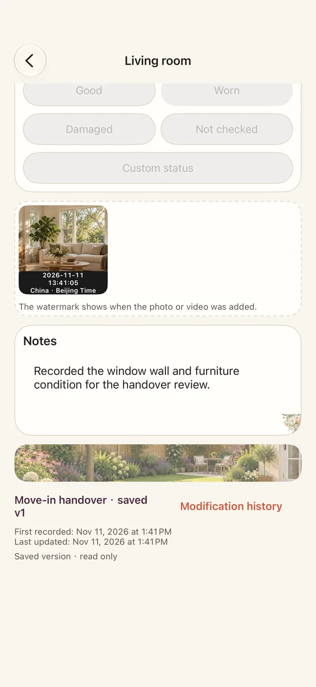
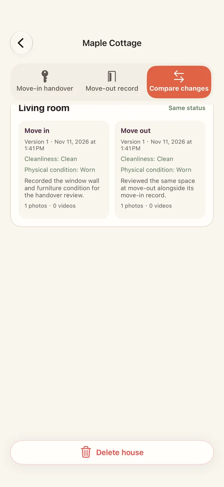

Illustrated guide
Rental move-in checklist: photos, reports and move-out comparison
What should you photograph when you get the keys? Start with the same views you’ll want at move-out. This walkthrough uses a sample property in Stayframe to show how to record each room, share a report and compare conditions later.
1. Photograph the room and note existing wear
Add your property and select the spaces you rent. In the move-in record for each room, take a wide shot for context and closer photos of any marks, scratches or damaged fittings.
Record cleanliness separately from physical condition. Use a specific note such as “scuff on the wall under the living room window” so you can find the same spot later.


2. Preview and send the move-in report
Open the move-in report preview and check that the rooms, photos and notes are included. Export a PDF or an image, then share it through the channel you use with your landlord.
Share video attachments separately. After you actually send the report, mark it as sent in Stayframe and keep any replies with your records.

3. At move-out, compare the same rooms
Before handing back the keys, take another set of photos from similar angles. Add them to the move-out records for the same spaces.
Open the comparison to see the two records side by side. If an item needs discussion, share the relevant room or difference report. Follow your lease and local requirements for the formal handover.


A checklist to use when you get the keys
- A wide photo of each room and close-ups of existing marks.
- Separate notes about cleanliness and the condition of walls, floors and fixtures.
- Photos or notes for keys, meters and shared spaces if relevant to your handover.
- A saved copy of the report and any replies from your landlord.